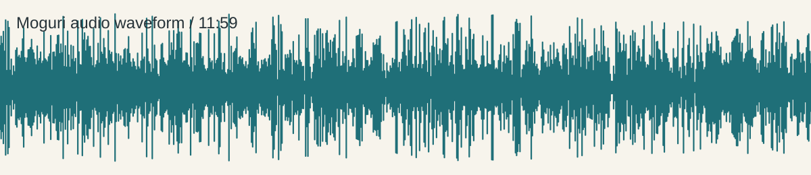

draft concept
Moguri Cup / 40歳の折り返し線
音源からの主案は、2026年11月または12月に西原町民体育館を起点にした 内輪向けの健康・競技イベント。前半は体力測定、後半はパークゴルフ、 夕方以降はBBQ/カラオケへ移動する流れ。
member planning board
100回記念会を、体力測定・パークゴルフ・打ち上げまで含む小さな体育祭として組み立てる。
draft concept
音源からの主案は、2026年11月または12月に西原町民体育館を起点にした 内輪向けの健康・競技イベント。前半は体力測定、後半はパークゴルフ、 夕方以降はBBQ/カラオケへ移動する流れ。
audio analysis

timestamped notes
venue reference
fee check
興業・大会扱いやアマチュアスポーツ以外の扱いは料金が変わる可能性があるため、電話確認が先。
next actions